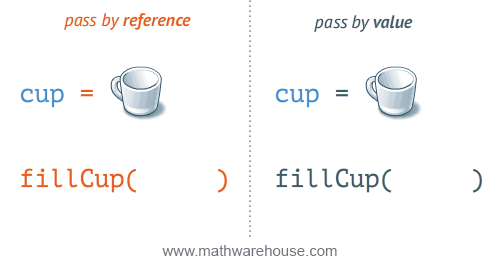

Functions with a Parameter
A function often needs pieces of information to be able to complete its work. In the last section you might have noticed that I had to ask for the length and width twice, once for each of the area and perimeter calculations; clearly not ideal. One method of doing this is to declare the variable as a global variable and then any code within that file can access it. This is a very brute force method and is very bad programming style. By doing it this way, the variable is created and held in memory for the entire time the file is running, even though the information may only be needed for a small fraction of the time. Also the function is no longer portable, since it relies on external global variables that might not exist in another program. A better, more elegant and more memory friendly way is to pass the information into the function using a parameter. There are three main ways to pass information to a function, by value, by reference and by object reference. For the time being we will just consider by value. (We will even assume python is doing by value, even though it is really doing it by object reference.)
Passing By Value
The first method of transferring information to a function is to pass it, “By Value”. This means that a copy of the data is made and it is passed over to the function to do with it what it pleases. Since it is a copy of the data, any changes to the data are not reflected in the original variable. From the animation below you can see that when the cup is passed “By Value” to the function and then filled up, the original cup is still empty. This is because the variable passed to the function is a copy, not the original variable. If the function changes this variable, nothing happens to the original one.
A variable or value passed along inside a function call is called an parameter. Parameter(s) are usually placed inside a bracket when you invoke the function. For example:
Code for Function with a Parameter
calculateArea(radius);
calculateArea(radius);
calculateArea(radius);
calculateArea(radius)
calculateArea(radius);
calculateArea(radius);
# call functions
When you are creating your function, you must also tell the program that the function is expecting these two values. To do this after the function name declaration you place in brackets the two declaration statements declaring that the function must be passed in two variables (just like when a regular variable is being declared). If your programming language requires that you declare what type the variables will be normally, you will most like have to do that too.
The following is the function declaration line for the examples above:
void calculateArea(int radius) {
void calculateArea(int radius) {
static void calculateArea(int radius) {
func calculateArea(radius int) {
public static void calculateArea(int radius) {
function calculateArea(radius) {
Here is a full example of the previous sections program, but now the main function takes care of getting the radius. This way it only has to ask you the information once and it passes the radius to the function:
1// Copyright (c) 2020 Mr. Coxall All rights reserved.
2//
3// Created by: Mr. Coxall
4// Created on: Sep 2020
5// This program calculates the area of circle
6
7#include <stdio.h>
8#include <math.h>
9
10void calculateArea(int radius) {
11 // this function calculates the area of circle
12
13 // process
14 int area = M_PI * radius * pow( 2, 2);
15
16 // output
17 printf("The area is %d cm²\n", area);
18}
19
20int main() {
21 // input
22 printf("Enter the radius of a circle (cm): ");
23 int radius;
24 scanf("%d", &radius);
25 printf("\n");
26
27 // call functions
28 calculateArea(radius);
29
30 printf("\nDone.\n");
31 return 0;
32}
1// Copyright (c) 2020 Mr. Coxall All rights reserved.
2//
3// Created by: Mr. Coxall
4// Created on: Sep 2020
5// This program calculates the area of circle
6
7#include <iostream>
8#include <cmath>
9
10
11void calculateArea(int radius) {
12 // this function calculates the area of circle
13
14 // process
15 int area = area = M_PI * radius * pow(radius, 2);
16
17 // output
18 std::cout << "The area is " << area << " cm²\n";
19}
20
21int main() {
22 int radius;
23
24 // input
25 std::cout << "Enter the radius of a circle (cm): ";
26 std::cin >> radius;
27 std::cout << std::endl;
28
29 // call functions
30 calculateArea(radius);
31
32 std::cout << "\nDone." << std::endl;
33 return 0;
34}
1/* Created by: Mr. Coxall
2 * Created on: Sep 2020
3 * This program calculates the area of circle
4*/
5
6using System;
7
8/*
9 * The Program class
10 * Contains all methods for performing basic variable usage
11*/
12class Program {
13 static void calculateArea(int radius) {
14 // this function calculates the area of circle
15
16 // process
17 int area = Math.Pi * radius ** 2;
18
19 // output
20 Console.WriteLine($"The area is {area} cm²");
21 }
22
23 public static void Main (string[] args) {
24 // input
25 Console.Write("Enter the radius of a circle (cm): ");
26 int radius = int.Parse(Console.ReadLine());
27 Console.WriteLine("");
28
29 // call functions
30 calculateArea(radius);
31
32 Console.WriteLine("\nDone.");
33 }
34}
1/**
2 * Created by: Mr. Coxall
3 * Created on: Sep 2020
4 * This program calculates the area of circle
5 */
6
7package main
8
9import (
10 "fmt"
11 "math"
12)
13
14func calculateArea(radius int) {
15 // this function calculates the area of circle
16
17 // process
18 area := math.Pi * radius ** 2
19
20 // output
21 fmt.Printf("The area is %d cm²\n", area)
22}
23
24func main() {
25 // input
26 var radius int
27 fmt.Print("Enter the radius of a circle (cm): ")
28 fmt.Scanln(&radius)
29 fmt.Println()
30
31 // call functions
32 calculateArea(radius)
33
34 fmt.Println("\nDone.")
35}
1/*
2 * This program calculates the area of circle
3 *
4 * @author Mr Coxall
5 * @version 1.0
6 * @since 2020-09-01
7 */
8
9import java.util.Scanner;
10
11final class Main {
12 /**
13 * Calculates calculates the area of circle.
14 *
15 * @param args nothing passed in
16 */
17 public static void calculateArea(int radius) {
18 // process
19 int area = Math.PI * Math.pow(radius, 2);
20
21 // output
22 System.out.printf("The area is %d cm²%n", area);
23 }
24
25 private Main() {
26 // Prevent instantiation
27 // Optional: throw an exception e.g. AssertionError
28 // if this ever *is* called
29 throw new IllegalStateException("Cannot be instantiated");
30 }
31
32 /**
33 * Main entry point into program.
34 *
35 * @param args nothing passed in
36 */
37 public static void main(final String[] args) {
38 // input
39 Scanner scanner = new Scanner(System.in);
40 System.out.print("Enter the radius of a circle (cm): ");
41 int radius = scanner.nextInt();
42 System.out.println();
43
44 // call functions
45 calculateArea(radius);
46
47 System.out.println("\nDone.");
48 }
49}
1/**
2 * Created by: Mr. Coxall
3 * Created on: Sep 2020
4 * This program calculates the area of circle
5 */
6
7const prompt = require('prompt-sync')();
8
9function calculateArea(radius) {
10 // this function calculates the area of circle
11
12 // process
13 const area = Math.PI * radius ** 2;
14
15 // output
16 console.log(`The area is ${area} cm²`);
17}
18
19// input
20const radius = parseInt(prompt("Enter the radius of a circle (cm): "));
21console.log();
22
23// call functions
24calculateArea(radius);
25
26console.log("\nDone.");
1#!/usr/bin/env python3
2"""
3Created by: Mr. Coxall
4Created on: Sep 2020
5This module calculates the area of circle
6"""
7
8import math
9
10
11def calculate_area(radius: int) -> None:
12 """The calculate_area() function calculates the area of circle, returns None."""
13
14 # process
15 area = math.pi * radius ** 2
16
17 # output
18 print(f"The area is {area:.2f} cm²")
19
20
21def main() -> None:
22 """The main() function just calls other functions, returns None."""
23
24 # input
25 radius = int(input("Enter the radius of a circle (cm): "))
26 print("")
27
28 # call functions
29 calculate_area(radius)
30
31 print("\nDone.")
32
33
34if __name__ == "__main__":
35 main()